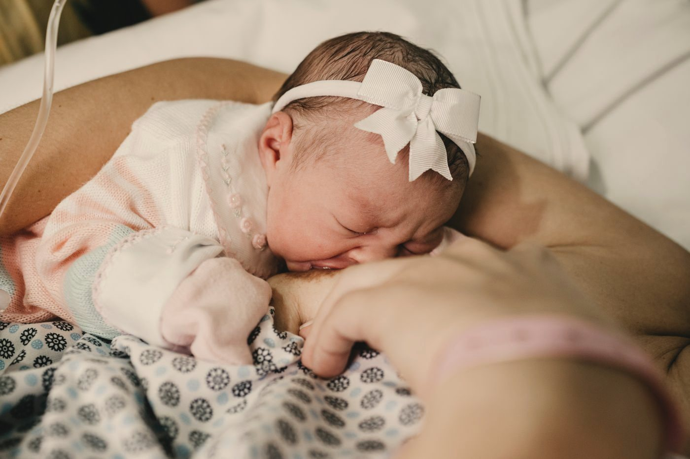

我第一胎在德國生。生之前，我面試了好幾位助產師，最後選了生產中心，沒有用止痛藥。那天結束時我心裡只有一個感覺：原來生產可以是這樣的——被支持著，很痛，但也很美。
後來回到台灣，第二胎在家裡生。也是那時我才發現，在台灣，「生產時身邊有一個專門陪妳的人」這件事，很多媽媽連聽都沒聽過。
這篇想回答的，就是那個最直接的問題：陪產員不做醫療，那為什麼要請？
先說清楚：陪產員是誰、不是誰
陪產員（doula，音近「杜拉」）是受過訓練、在孕期、生產當下與產後，提供持續性情緒、身體與資訊支持的人。
- 不是醫護。我不做內診、不判讀胎心、不接生，也不替妳做醫療決定。這些是醫師與助產師的專業。
- 不是取代伴侶。陪產員在場，先生有人可以問、可以輪流休息，不會整場都在猜自己該做什麼。
- 不是只服務自然產。醫院、無痛、剖腹，都可以有陪產員。
研究怎麼說
關於「生產時有人持續陪伴」，目前最完整的證據是 Cochrane 在 2017 年更新的系統綜述（Bohren 等），統合 26 項隨機試驗、15,858 位女性、17 個國家。和常規照護相比，生產全程有人持續陪伴的女性：
研究也沒有發現持續陪伴帶來任何風險。更值得一提的是次群組分析：當陪伴者是受過訓練的陪產員（而不是醫院員工或親友）時，效果最明顯——剖腹產風險降低約 39%。
另一組常被引用的數字來自美國：同樣是公費醫療（Medicaid）的產婦，有陪產員陪伴的那一群，剖腹產率明顯較低。這是觀察性研究，不是隨機試驗，但方向和 Cochrane 一致。
剖腹產率：有陪產員 vs 全國
美國 Medicaid 產婦，n＝1,079 位有陪產員陪伴
資料：Kozhimannil 等（2013）Am J Public Health，PMID 23409910
這也是為什麼世界衛生組織在 2018 年的《產程照護：正向生產經驗》指引中，建議所有女性在整個產程與分娩中，都能有一位自己選擇的陪伴者。那個人可以是伴侶、家人、朋友，也可以是陪產員。
常有人說「有陪產員比較不會產後憂鬱」。目前確實有初步研究看到正向的訊號，但多是觀察性研究或幾十人的小型試驗，還沒有大型隨機試驗能確定。我寧可跟妳說「還不知道」，也不想把希望說成結論。
陪產員實際在做的四件事
Cochrane 2019 年另一篇質性綜述（整理 51 項研究、產婦與陪伴者自己的描述），把陪伴者做的事歸成四類。我在現場做的，也正是這四件：
資訊
說明現在產程走到哪、醫護剛剛說的是什麼意思，以及有哪些不用藥的減痛方式。
為妳發聲
妳痛到說不出話的時候，幫妳把事先想好的心願告訴醫護，語氣平和，也尊重他們的專業。
身體
陪妳走動、換姿勢、按壓、熱敷、握著妳的手，提醒妳喝水、吃東西。
情緒
一直在。鼓勵、安撫，讓妳知道這些感覺是正常的、妳做得到。
同一篇研究也提到：有陪伴的女性，對生產的感受往往比較正面；而陪產的伴侶，有時會因為看著太太痛而焦慮，覺得自己沒被納入照護團隊。這也是我在產房最常看到的畫面——先生其實很想幫忙，只是不知道從哪裡開始。
在台灣，為什麼這件事更重要
台灣的剖腹產率大約在 36–38%（衛福部統計；2023 年媒體轉述為 38.4%），在國際上偏高。台灣生育改革行動聯盟 2023 年的生產經驗調查中，醫院的會陰切開比例約七成。
台灣很多處置是醫院的標準流程（SOP），醫師照流程走，本身沒有錯。如果妳有不同的心願，要早一點說，最好寫下來，事先跟醫師談好。可是在陣痛最強的時候，很少人還有力氣好好說話。
另外，台灣對陪產員能不能進產房，沒有中央統一規定，各家醫院自己決定。所以如果妳想請陪產員，記得在選醫院時就先問清楚。
也有人覺得不需要
我讀了不少產家在國外論壇上的分享，正反兩邊都有，想把它們放在一起給妳看：
- 覺得很值得的：陪產員像是和醫護之間的橋樑；先生可以專心陪太太，不用一邊查資料、一邊找護理師；有人說「早知道，付兩倍也願意」。
- 覺得沒那麼必要的：打了無痛、剛好遇到很好的護理師、伴侶本身就很穩的媽媽，有人事後覺得陪產員主要是「讓先生能喘口氣」，也覺得費用不低。也有人把預算留給產後的陪伴，覺得更值得。
幾乎所有人都同意的一點是：值不值得，很看人，也很看合不合拍。所以我的建議是：先面談，多聊幾位，選一個妳一看到就覺得能放鬆的人。如果那個人不是我，也完全沒關係。
生產過後，媽媽們記得的事

生產過後聊起那一天，媽媽們很少講到產程幾個小時。她們記得的，常常是誰在旁邊、誰說了哪一句話、害怕的時候有沒有人握著她的手。
陪產員在場，不管妳用什麼方式生、過程順不順利，身邊都有一個從頭到尾站在妳這邊的人。
如果妳想知道我怎麼陪，可以看看溫柔生產陪產服務，或直接跟我聊聊。也推薦〈多元生產方式：12 種選擇的簡單介紹〉。
常見問題
先生會陪產，還需要陪產員嗎？
兩者不衝突。研究發現，伴侶在有陪產員或助產師一起時，陪產經驗往往更正向——因為有人告訴他現在發生什麼、他可以做什麼，也能讓他休息一下。陪產員也會照顧到伴侶。
打算打無痛或剖腹產，也適合找陪產員嗎？
適合。陪產員不是只服務自然產。打了無痛之後，一樣需要換姿勢、需要有人說明產程；計畫性剖腹的媽媽，也常需要有人陪她準備、陪她消化。不管用哪種方式生，都值得有人好好陪著。
陪產員可以進台灣醫院的產房嗎？
看醫院。台灣沒有中央統一規定，各院自訂，有些只允許一位陪產者。建議選醫院時就先問清楚，再決定要請陪產員陪產，還是以產前、產後的陪伴為主。
請陪產員大概要多少錢？
每位陪產員的內容差很多。我的陪伴方案從 NT$21,000 起（線上陪伴，到產後 6 週），加上產前教育或實體陪產會依內容調整，聊過之後我會給妳完整報價。看三種陪伴方案 →
資料來源
- Bohren MA 等（2017）《Continuous support for women during childbirth》Cochrane Database Syst Rev, CD003766（Cochrane Library｜PMID 28681500）
- Bohren MA 等（2019）《Perceptions and experiences of labour companionship》Cochrane, CD012449（繁體中文摘要）
- World Health Organization（2018）WHO recommendations: intrapartum care for a positive childbirth experience（WHO）
- Dekker R 等《Evidence on: Doulas》Evidence Based Birth，2024 年 4 月更新（連結）——陪產員次群組數字引自此篇整理
- Kozhimannil KB 等（2013）Am J Public Health（PMID 23409910）
- 產後憂鬱：Gjerdingen DK 等（2013）先導隨機試驗（連結）；伊朗 2024–25 前瞻研究（連結）
- 台灣剖腹產率：衛生福利部統計處（連結）；2023 年 38.4% 引自科技新報 2025-07-09 報導（連結）
- 會陰切開：台灣生育改革行動聯盟 2023 年生產經驗調查（連結）
- 產家的正反聲音：Hellobee、The Bump、Berkeley Parents Network 等英文論壇討論（例）
本文為資訊整理，不構成醫療建議，也不能取代妳與醫師、助產師的直接討論。